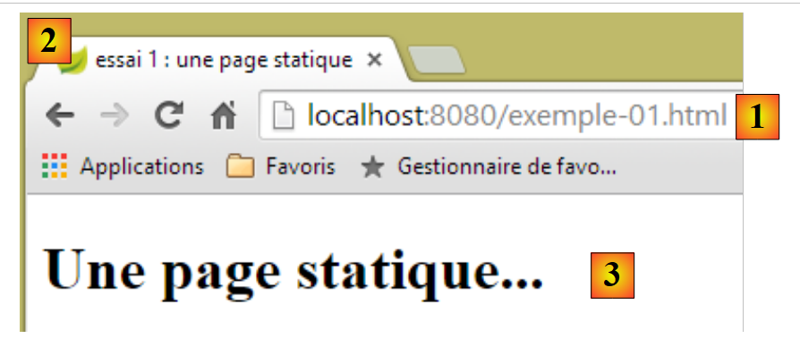
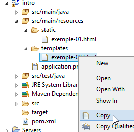
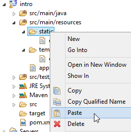
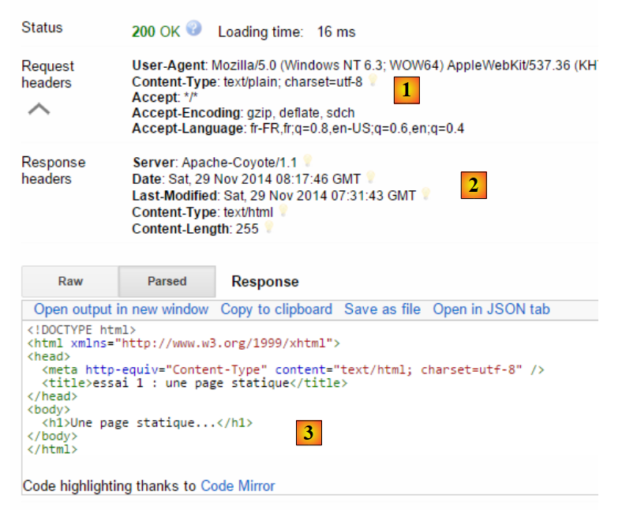
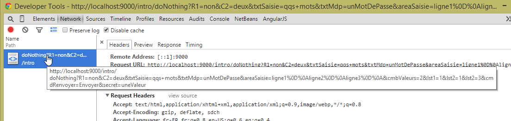
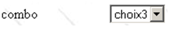

2. Web 编程基础
本章的主要目的是介绍 Web 编程的关键原则，这些原则与实现它们所使用的具体技术无关。书中提供了大量示例，建议您亲自测试，以便逐步“领悟” Web 开发的理念。已经掌握这些知识的读者可以直接跳到第 3 章。
Web 应用程序的组成部分如下：

编号 | 角色 | 常见示例 |
1 | 服务器操作系统 | Unix、Linux、Windows |
2 | Web 服务器 | Apache（Unix、Linux、Windows） IIS（Windows + .NET 平台） Node.js（Unix、Linux、Windows） |
3 | 服务器端代码。它可由服务器模块或服务器外部的程序（CGI）执行。 | JavaScript (Node.js) PHP (Apache, IIS) JAVA（Tomcat、WebSphere、JBoss、WebLogic 等） C#、VB.NET（IIS） |
4 | 数据库——可以与使用它的程序位于同一台机器上，也可以通过互联网位于另一台机器上。 | Oracle (Linux, Windows) MySQL (Linux, Windows) Postgres（Linux、Windows） SQL Server（Windows） |
5 | 客户端操作系统 | Unix、Linux、Windows |
6 | 网页浏览器 | Chrome、Internet Explorer、Firefox、Opera、Safari 等 |
7 | 在浏览器内执行的客户端脚本。这些脚本无法访问客户端计算机的磁盘。 | JavaScript（所有浏览器） |
2.1. Web 应用程序中通过表单进行数据交换

数字 | 角色 |
1 | 浏览器首次请求一个 URL（http://machine/url）。未传递任何参数。 |
2 | Web 服务器发送该 URL 对应的网页。该网页可能是静态的，也可能是由服务器端脚本 (SA) 动态生成的，该脚本可能使用了来自数据库 (SB, SC) 的内容。在此，脚本将检测到该 URL 是被无参数请求的，并生成初始网页。 浏览器接收该页面并将其显示出来（CA）。浏览器端的脚本（CB）可能会修改服务器发送的初始页面。随后，通过用户（CD）与脚本（CB）之间的交互，网页内容将发生变化。特别是，表单将被填写。 |
3 | 用户提交表单数据，这些数据随后必须发送至Web服务器。浏览器根据需要请求初始URL或其他URL，并同时将表单值传输至服务器。此过程可采用两种方法：GET和POST。收到客户端请求后， 服务器将触发与所请求URL关联的脚本（SA），该脚本将检测参数并进行处理。 |
4 | 服务器返回由程序（SA、SB、SC）生成的网页。此步骤与前面的步骤 2 完全相同。通信现在按照步骤 2 和 3 继续进行。 |
2.2. 静态网页、动态网页
静态页面由一个HTML文件表示。动态页面是由Web服务器“即时”生成的HTML页面。
2.2.1. 静态 HTML（超文本标记语言）页面
让我们来构建我们的第一个 Spring MVC 项目 [1-2]：
 |
- 在 [1-2] 中，我们将基于 Spring Boot 创建一个新项目 [http://projects.spring.io/spring-boot/]；
 |
- [3-7] 中的信息用于该项目的 Maven 配置；
- 在 [3] 中，是 Maven 项目的名称；
- 在 [4] 中，是项目编译输出将放置的 Maven 组；
- 在 [5] 中，指定编译输出的名称；
- [6] 中的内容是项目的描述；
- 在 [7] 中，项目可执行类将放置的包；
- 在 [8] 中，指定项目的类型。这是一个使用 Thymeleaf 视图的 Web 项目。在此，我们可以看到 Spring Boot 项目提供的所有即用型 Maven 依赖项；
- 在 [9] 中，我们指定 Maven 构建的输出将打包为 JAR 归档文件而非 WAR。随后，该项目将使用一个嵌入式 Tomcat 服务器，该服务器将被包含在其依赖项中；
- 在 [10] 中，我们进入向导的下一步；
 |
- 在 [11] 中，我们指定项目目录；
- 在 [12] 中，我们完成向导；
- 在 [13] 中，生成的项目。
让我们查看生成的 [pom.xml] 文件：
<?xml version="1.0" encoding="UTF-8"?>
<project xmlns="http://maven.apache.org/POM/4.0.0" xmlns:xsi="http://www.w3.org/2001/XMLSchema-instance"
xsi:schemaLocation="http://maven.apache.org/POM/4.0.0 http://maven.apache.org/xsd/maven-4.0.0.xsd">
<modelVersion>4.0.0</modelVersion>
<groupId>istia.st.springmvc</groupId>
<artifactId>intro</artifactId>
<version>0.0.1-SNAPSHOT</version>
<packaging>jar</packaging>
<name>springmvc-intro</name>
<description>Les bases de la programmation web</description>
<parent>
<groupId>org.springframework.boot</groupId>
<artifactId>spring-boot-starter-parent</artifactId>
<version>1.1.9.RELEASE</version>
<relativePath /> <!-- lookup parent from repository -->
</parent>
<dependencies>
<dependency>
<groupId>org.springframework.boot</groupId>
<artifactId>spring-boot-starter-web</artifactId>
</dependency>
<dependency>
<groupId>org.springframework.boot</groupId>
<artifactId>spring-boot-starter-test</artifactId>
<scope>test</scope>
</dependency>
</dependencies>
<properties>
<project.build.sourceEncoding>UTF-8</project.build.sourceEncoding>
<start-class>istia.st.springmvc.Application</start-class>
<java.version>1.7</java.version>
</properties>
<build>
<plugins>
<plugin>
<groupId>org.springframework.boot</groupId>
<artifactId>spring-boot-maven-plugin</artifactId>
</plugin>
</plugins>
</build>
</project>
它包含了向导中提供的所有信息。在第 26 至 30 行，我们发现了一个此前未曾注意到的依赖项。它支持将 JUnit 单元测试与 Spring 进行集成。
让我们先在这个项目中创建一个静态 HTML 页面。默认情况下，它应放置在 [src/main/resources/static] 文件夹中：
 |
- 在 [1-4] 中，在 [static] 文件夹中创建一个 HTML 文件；
 |
- 在 [6] 中，为页面命名；
- 在 [7] 中，页面已添加完成。
创建的页面内容如下：
<!DOCTYPE html>
<html>
<head>
<meta charset="ISO-8859-1">
<title>Insert title here</title>
</head>
<body>
</body>
</html>
- 第2至10行：代码由根标签 <html> 限定；
- 第3-6行：<head>标签界定了所谓的页面头部；
- 第7-9行：<body>标签界定了所谓的页面主体。
让我们按以下方式修改此代码：
<!DOCTYPE html>
<html xmlns="http://www.w3.org/1999/xhtml">
<head>
<meta http-equiv="Content-Type" content="text/html; charset=utf-8" />
<title>essai 1 : une page statique</title>
</head>
<body>
<h1>Une page statique...</h1>
</body>
</html>
- 第5行：定义页面标题——将作为显示该页面的浏览器窗口的标题显示；
- 第8行：大号字体文本（<h1>）。
让我们运行应用程序 [1-3]：
 |
然后，使用浏览器访问 URL [http://localhost:8080/exemple-01.html]：
 |
- 在 [1] 中，显示页面的 URL；
- 在 [2] 中，窗口标题——由页面的 <title> 标签提供；
- 在 [3] 中，页面的正文——由 <h1> 标签提供。
让我们看看 [4-5] 浏览器接收到的 HTML 代码：
 |
- 在[5]中，浏览器接收到了我们构建的 HTML 页面。它解析了该页面，并将其渲染为图形界面。
2.2.2. 一个动态的 Thymeleaf 页面
现在，让我们创建一个 Thymeleaf 页面。这是一个标准的 HTML 页面，其中标签被添加了 [Thymeleaf] 属性 [http://www.thymeleaf.org/]。我们遵循与创建 HTML 页面类似的流程，但这次新创建的 HTML 页面必须放置在 [templates] 文件夹中：
 |
[example-02.html] 页面将如下所示：
<!DOCTYPE HTML>
<html xmlns:th="http://www.thymeleaf.org">
<head>
<title>spring mvc intro</title>
<meta http-equiv="Content-Type" content="text/html; charset=UTF-8" />
</head>
<body>
<p th:text="'Il est ' + ${heure}">Voici l'heure</p>
</body>
</html>
- 第 8 行：<p> 标签是一个 HTML 标签，用于在显示的页面中插入一个段落。[th:text] 是 [Thymeleaf] 的一个属性，其作用取决于 [Thymeleaf] 是否处于活动状态：
- 如果 [Thymeleaf] 不解析 HTML 页面，[th:text] 属性将被忽略，因为它在 HTML 中是未知的。此时显示的文本将是 [Here is the time]，
- 如果 [Thymeleaf] 解析了 HTML 页面，则会评估 [th:text] 属性，其值将替换 [Here is the time] 文本。该值通常为 [It is 17:11:06] 之类的内容；
让我们看看实际效果。我们将页面 [templates/example-02.html] 复制到 [static] 文件夹中。放置在此文件夹中的 HTML 页面不会被 [Thymeleaf] 解析：
 |  |  |
我们像之前多次做过的那样运行应用程序，然后在浏览器中访问 URL [http://localhost:8080/exemple-02.html]：
 |
我们在[1]中看到，[th:text]属性并未被解析，但也未引发错误。显示在[2]中的页面源代码表明，浏览器已成功接收了完整的页面。
让我们回到 [templates] 文件夹中的 [example-02.html] 页面：
 |
放置在 [templates] 文件夹中的 HTML 页面由 [Thymeleaf] 进行处理。让我们回到该页面的代码：
<!DOCTYPE HTML>
<html xmlns:th="http://www.thymeleaf.org">
<head>
<title>spring mvc intro</title>
<meta http-equiv="Content-Type" content="text/html; charset=UTF-8" />
</head>
<body>
<p th:text="'Il est ' + ${heure}">Voici l'heure</p>
</body>
</html>
- 第 7 行：[Thymeleaf] 将解析 [th:text] 属性，并将 [当前时间] 替换为表达式的值：
该表达式使用了变量 [${time}]，其中 [time] 属于视图模板 [example-02.html]。因此我们需要创建该模板。为此，我们将参考第 1.6 节中讨论的示例。我们按以下方式更新项目：
 |
在 [1] 中，我们添加以下控制器：
package istia.st.springmvc;
import java.text.SimpleDateFormat;
import java.util.Date;
import org.springframework.stereotype.Controller;
import org.springframework.ui.Model;
import org.springframework.web.bind.annotation.RequestMapping;
@Controller
public class MyController {
@RequestMapping("/")
public String heure(Model model) {
// time format
SimpleDateFormat formater = new SimpleDateFormat("HH:MM:ss");
// the hour of the moment
String heure = formater.format(new Date());
// set the time in the view model
model.addAttribute("heure", heure);
// display the [exemple-02.html] view
return "exemple-02";
}
}
- 第 13-14 行：[time] 方法处理 URL [/]；
- 第 14 行：[Model model] 是一个空模型。[time] 操作必须向其中填充模型中所需的属性。我们知道视图 [example-02.html] 期望有一个名为 [time] 的属性；
- 第 19-22 行：实现上述内容。视图 [example-02.html] 将被显示（第 22 行），其模型中包含名为 [time] 的属性（第 20 行）；
- 第 16 行：创建了一个日期格式化器。所使用的格式 [HH:MM:ss] 是一种 [小时:分钟:秒] 格式，其中小时的取值范围为 [0-24]；
- 第 18 行：使用此格式化器，对今天的日期进行格式化；
- 第 20 行：将生成的时间赋值给名为 [time] 的属性；
我们启动应用程序并请求 URL [/]：
 |
- [1] 显示了生成的页面，[2] 显示了其 HTML 内容。我们可以看到，初始文本 [Here is the time] 已完全消失；
如果现在刷新页面[1]（按F5），即使URL没有改变，我们也会看到不同的显示（新时间）。这就是页面的动态特性：其内容会随时间变化。
由此可见，动态页面与静态页面在性质上存在根本差异。
2.2.3. 配置 Spring Boot 应用程序
让我们回到 Eclipse 项目架构：
 |
[application.properties] 文件用于配置 Spring Boot 应用程序。目前，该文件为空。正如 [http://docs.spring.io/spring-boot/docs/current/reference/html/common-application-properties.html] 中的说明，该文件可用于以多种方式配置应用程序。我们将使用以下 [application.properties] 文件 [2]：
- 第 1 行：设置 Web 应用程序的服务端口；
- 第 2 行：设置 Web 应用程序上下文；
通过此配置，静态页面 [example-01.html] 将可通过 URL [http://localhost:9000/intro/exemple-01.html] 访问：
 |
2.3. 浏览器端脚本
HTML 页面可以包含由浏览器执行的脚本。目前（2015 年 1 月），主要的浏览器端脚本语言是 JavaScript。已有数百个基于该语言构建的库，旨在让开发者的工作更加轻松。
让我们在现有项目的 [static] 文件夹中创建一个新页面 [example-03.html]：
 |
编辑 [example-03.html] 文件，内容如下：
<!DOCTYPE html>
<html xmlns="http://www.w3.org/1999/xhtml">
<head>
<meta http-equiv="Content-Type" content="text/html; charset=utf-8" />
<title>exemple Javascript</title>
<script type="text/javascript">
function réagir() {
alert("Vous avez cliqué sur le bouton !");
}
</script>
</head>
<body>
<input type="button" value="Cliquez-moi" onclick="réagir()" />
</body>
</html>
- 第 13 行：定义了一个按钮（type 属性），其文本为“Click me”（value 属性）。点击时，将执行 JavaScript 函数 [react]（onclick 属性）；
- 第 6–10 行：一段 JavaScript 脚本；
- 第 7–9 行：[react] 函数；
- 第 8 行：显示一个对话框，显示消息 [您点击了按钮]。
让我们在浏览器中查看该页面：
 |
- [1] 中显示的页面；
- 在 [2] 中，点击按钮时显示的对话框。
点击按钮时，不会与服务器进行通信。JavaScript 代码由浏览器执行。
随着海量 JavaScript 库的出现，我们现在可以直接在浏览器中嵌入功能完整的应用程序。这导致了以下架构：
 |
- 1-2：HTML 服务器是用于托管静态 HTML5/CSS/JavaScript 页面的服务器；
- 3-4：生成的 HTML5/CSS/JavaScript 页面直接与数据服务器交互。数据服务器提供不含 HTML 标记的数据。JavaScript 将这些数据插入到浏览器中已存在的 HTML 页面中。
在这种架构下，JavaScript 代码可能会变得臃肿。因此，我们计划像处理服务器端代码那样，将其划分为不同的层：
 |
- [UI] 层负责与用户交互；
- [DAO] 层负责与数据服务器交互；
- [业务]层包含既不与用户交互也不与数据服务器交互的业务流程。该层可能不存在。
2.4. 客户端-服务器通信
让我们回到最初展示 Web 应用程序组件的图示：

在此，我们关注客户端机器与服务器机器之间的交互。这些交互通过网络进行，因此有必要回顾两台远程机器之间交互的一般结构。
2.4.1. OSI模型
由国际标准化组织（ISO）定义的开放网络模型——即OSI（开放系统互连参考模型），描述了一个理想的网络环境，其中机器间的通信可通过七层模型来表示：
 |
每一层从下层接收服务，并向上层提供自身的服务。假设位于不同机器A和B上的两个应用程序想要通信：它们在应用层进行通信。它们无需了解网络运作的所有细节：每个应用程序将希望传输的信息传递给下层——即表示层。 因此，应用程序只需了解与表示层的交互规则。一旦信息进入表示层，就会根据其他规则传递到会话层，依此类推，直到信息到达物理介质并被物理传输到目标机器。在那里，它将经历与发送机器上相反的处理过程。
在每一层，负责发送信息的发送方进程都会将其发送给另一台机器上与其处于同一层的接收方进程。这一过程遵循被称为“层协议”的特定规则。因此，我们得到如下最终通信示意图：
 |
各层的作用如下：
物理层 | 确保通过物理介质传输比特。该层包括数据处理终端设备（DPTE），如终端或计算机，以及数据电路终端设备（DCTE），如调制解调器、复用器和集中器。该层的主要考虑因素包括：
|
数据链路层 | 隐藏物理层的物理特性。检测并纠正传输错误。 |
网络 | 管理信息在网络中传输时必须遵循的路径。这被称为路由：确定信息到达目的地必须经过的路线。 |
传输 | 实现两个应用程序之间的通信，而前几层仅允许机器之间的通信。该层提供的一项服务是多路复用：传输层可以利用单一网络连接（机器间连接）来传输属于多个应用程序的数据。 |
会话 | 该层提供的服务允许应用程序在远程机器上建立并维持工作会话。 |
表示层 | 该层旨在标准化不同机器间数据的表示形式。因此，源自机器 A 的数据在通过网络发送前，将由机器 A 的表示层根据标准格式进行“格式化”。当数据到达目标机器 B 的表示层时，该层将凭借其标准格式识别这些数据，并对其进行重新格式化，以便机器 B 上的应用程序能够识别它们。 |
应用层 | 在此层级，我们看到的是通常与用户密切相关的应用程序，例如电子邮件或文件传输。 |
2.4.2. TCP/IP模型
OSI模型是一个理想模型。TCP/IP协议套件通过以下方式对其进行近似：
 |
- 网络接口（计算机的网卡）执行 OSI 模型第 1 层和第 2 层的功能
- IP（互联网协议）层执行 OSI 模型第 3 层（网络层）的功能
- TCP（传输控制协议）或 UDP（用户数据报协议）层执行第 4 层（传输层）的功能。 TCP协议确保 设备之间交换的数据包能够到达目的地。如果未能到达，它会重发丢失的数据包。UDP协议不执行此任务，因此需要由应用程序开发人员来处理。这就是为什么在互联网上——一个并非100%可靠的网络——TCP协议被广泛使用。这种网络被称为TCP/IP网络。
- 应用层涵盖了OSI模型中第5层至第7层的功能。
Web应用程序位于应用层，因此依赖于TCP/IP协议。客户端和服务器机器的应用层之间交换消息，这些消息由模型的第1层至第4层负责路由至目的地。为了相互通信，两台机器的应用层必须“使用”相同的语言或协议。 Web应用程序使用的协议称为HTTP（超文本传输协议）。这是一种基于文本的协议，意味着机器通过网络交换文本行来通信。这些交换是标准化的，即客户端有一套消息用于向服务器精确表达其需求，服务器也有一套消息用于向客户端提供响应。这种消息交换采用以下形式：

客户端 --> 服务器
当客户端向 Web 服务器发出请求时，它会发送
- 以 HTTP 格式编写的文本行来表明其需求；
- 空行；
- 可选地，一个文档。
服务器 --> 客户端
当服务器向客户端响应时，它会发送
- 以 HTTP 格式发送的文本行，以说明其发送的内容；
- 一个空行；
- 可选地，一个文档。
因此，双向通信都遵循相同的格式。在两种情况下，都可能发送文档，尽管客户端向服务器发送文档的情况很少见。但HTTP协议允许这样做。正是这一点使得，例如，ISP的用户能够将各种文档上传到由该ISP托管的个人网站上。交换的文档可以是任何类型。考虑一个浏览器请求包含图像的网页：
- 浏览器连接到 Web 服务器并请求所需的页面。被请求的资源通过 URL（统一资源定位符）进行唯一标识。浏览器仅发送 HTTP 头，而不发送文档。
- 服务器作出响应。它首先发送 HTTP 头部，表明将发送何种类型的响应。如果请求的页面不存在，这可能是错误响应。如果页面存在，服务器将在响应的 HTTP 头部中表明，随后将发送一个 HTML（超文本标记语言）文档。该文档是一系列 HTML 格式的文本行。 HTML文本包含标签（标记），这些标签为浏览器提供了如何显示文本的指令。
- 客户端通过服务器的 HTTP 头得知将收到一个 HTML 文档。它会解析该文档，并可能发现其中包含图像引用。这些图像并未包含在 HTML 文档中。因此，它会向同一台 Web 服务器发出新请求，以获取所需的第一个图像。此请求与步骤 1 中的请求完全相同，只是请求的资源不同。 服务器将处理此请求，向客户端发送所请求的图像。此次，在响应中，HTTP 头部将明确指出所发送的文档是图像而非 HTML 文档。
- 客户端接收所发送的图像。步骤 3 和 4 将不断重复，直到客户端（通常是浏览器）获取到显示整页所需的所有文档为止。
2.4.3. HTTP 协议
让我们通过实例来探索 HTTP 协议。浏览器和 Web 服务器之间会交换什么？
Web 服务或 HTTP 服务是一种通常在 80 端口上运行的 TCP/IP 服务。它也可以在其他端口上运行。在这种情况下，客户端浏览器必须在请求的 URL 中指定该端口。URL 通常具有以下形式：
协议://主机[:端口]/路径/信息
其中
协议 | Web 服务的 http。浏览器还可以作为 FTP、新闻、Telnet 及其他服务的客户端。 |
机器 | 托管 Web 服务的机器名称 |
端口 | Web 服务端口。若为 80，则可省略端口号。这是最常见的情况 |
路径 | 请求资源的路径 |
info | 提供给服务器的附加信息，用于指定客户端的请求 |
当用户请求加载一个 URL 时，浏览器会做什么？
- 它会与URL中machine[:port]部分指定的机器和端口建立TCP/IP连接。建立TCP/IP连接意味着在两台机器之间创建一条通信“通道”。一旦该通道建立，两台机器之间交换的所有信息都将通过它传输。建立这条TCP/IP通道时，尚不涉及Web的HTTP协议。
- TCP-IP连接建立后，客户端通过发送符合HTTP格式的文本行（命令）向Web服务器发送请求。它将URL中的路径/信息部分发送给服务器
- 服务器将通过同一连接以相同方式进行响应
- 双方中的一方将决定关闭连接。这取决于所使用的HTTP协议。在HTTP 1.0中，服务器会在每次响应后关闭连接。这迫使需要多次请求以获取构成网页的各种文档的客户端，为每次请求都建立新的连接，从而产生额外开销。 在 HTTP/1.1 协议中，客户端可以指示服务器保持连接打开，直到客户端要求关闭连接为止。因此，客户端可以通过单个连接获取网页的所有文档，并在获取最后一个文档后自行关闭连接。服务器将检测到此关闭操作，并随之关闭连接。
为了分析客户端与Web服务器之间的交互，我们将使用第9.6节中安装的Chrome浏览器扩展程序[Advanced Rest Client]。我们将处于以下情况：

Web 服务器可以是任意服务器。此处，我们的目标是分析浏览器与 Web 服务器之间将发生的交互。此前，我们创建了以下静态 HTML 页面：
<!DOCTYPE html>
<html xmlns="http://www.w3.org/1999/xhtml">
<head>
<meta http-equiv="Content-Type" content="text/html; charset=utf-8" />
<title>essai 1 : une page statique</title>
</head>
<body>
<h1>Une page statique...</h1>
</body>
</html>
我们在浏览器中查看的内容：
 |
我们可以看到请求的 URL 是：[http://localhost:9000/intro/exemple-01.html]。因此，Web 服务器是运行在 9000 端口的 localhost（即本地机器）。让我们使用 [Advanced Rest Client] 应用程序来请求同一个 URL：
 |
- 在 [1] 中，启动该应用程序（在新打开的 Chrome 标签页的 [应用程序] 选项卡中）；
- 在 [2] 中，选择 [请求] 选项；
- 在 [3] 中，指定要查询的服务器：http://localhost:9000；
- 在 [4] 中，指定请求的 URL：/intro/example-01.html；
- 在 [5] 中，向 URL 添加任何参数。此处无参数；
- 在 [6] 中，指定请求使用的 HTTP 方法，本例中为 GET。
这将生成以下请求：
 |
通过这种方式准备的请求 [7] 由 [8] 发送至服务器。随后收到的响应如下：
 |
我们之前提到，客户端与服务器的交互采用以下形式：
- 在[1]中，我们可以看到浏览器在其请求中发送的HTTP头部。当时它没有文档要发送；
- 在[2]中，我们可以看到服务器在响应中发送的HTTP头部。在[3]中，我们可以看到它发送的文档。
在[3]中，我们可以识别出我们放置在Web服务器上的静态HTML页面。
让我们来分析一下浏览器的 HTTP 请求：
- 第 1 行未被应用程序显示；
- 第 6 行：浏览器通过 [User-Agent] 标头进行自我识别；
- 第 7 行：浏览器表明其正在向服务器发送一个 UTF-8 格式的文本文档（text/plain）。实际上，在此处，浏览器并未发送任何文档；
- 第8行：浏览器表明其接受任何类型的响应文档；
- 第 9 行：浏览器指定了可接受的文档格式；
- 第 10 行：浏览器按优先级顺序列出了其首选的语言。
服务器通过发送以下 HTTP 头部作为响应：
- 第1行：未由应用程序显示；
- 第 2 行：服务器进行自我标识，本例中为 Apache-Coyote 服务器；
- 第3行：文档的最后修改日期；
- 第 4 行：服务器发送的文档类型。此处为 HTML 文档；
- 第 5 行：发送的 HTML 文档的字节大小。
- 第 6 行：响应的日期和时间；
2.4.4. 结论
我们通过几个示例探讨了Web客户端请求及其服务器响应的结构。通信通过HTTP协议进行，该协议是一组双方之间交换的基于文本的命令。客户端的请求和服务器的响应遵循相同的结构：
请求资源的两种常见命令是 GET 和 POST。GET 命令不附带文档。而 POST 命令则附带一个文档，该文档通常是 包含表单中所有输入值的字符串。HEAD 命令允许仅请求 HTTP 头部，且不附带文档。
作为对客户端请求的响应，服务器会发送结构相同的响应。所请求的资源会在 [Document] 部分传输，除非客户端的命令是 HEAD，这种情况下仅发送 HTTP 头。
2.5. HTML 基础
网页浏览器可以显示各种文档，其中最常见的是 HTML（超文本标记语言）文档。这是使用 <tag>text</tag> 形式的标签进行格式化的文本。因此，文本 <B>important</B> 将以粗体显示“important”一词。还有一些独立标签，例如 <hr/> 标签，它会显示一条水平线。我们不会逐一介绍 HTML 文本中所有可用的标签。 有许多所见即所得（WYSIWYG）软件，允许您无需编写任何 HTML 代码即可构建网页。这些工具会自动为使用鼠标和预定义控件创建的布局生成 HTML 代码。因此，您可以（使用鼠标）将表格插入页面，然后查看软件生成的 HTML 代码，从而了解在网页上定义表格应使用的标签。就是这么简单。 此外，掌握 HTML 知识至关重要，因为动态 Web 应用程序必须自行生成 HTML 代码并发送给 Web 客户端。该代码是通过编程方式生成的，而您当然必须清楚该生成什么内容，才能确保客户端收到他们想要的网页。
总而言之，您无需精通整个HTML语言即可开始网页编程。不过，掌握这些知识是必要的，且可以通过使用DreamWeaver等所见即所得（WYSIWYG）网页编辑器来学习。探索HTML奥秘的另一种方法是浏览网页，查看那些包含您未曾接触过的有趣元素的页面源代码。
2.5.1. 一个示例
请看以下示例，其中包含网页文档中常见的一些元素，例如：
- 一个表格；
- 一张图片；
- 一个链接。
 |  |
HTML文档通常具有以下结构：
<html> <head> <title>标题</title> ... </head> <body 属性> ... </body></html>
整个文档由 <html>...</html> 标签包围。它由两部分组成：
- <head>...</head>：这是文档中不可显示的部分。它向将显示该文档的浏览器提供信息。该部分通常包含 <title>...</title> 标签，用于设置将在浏览器标题栏中显示的文本。 该部分还可能包含其他标签，尤其是定义文档关键词的标签，这些关键词随后会被搜索引擎使用。该部分还可能包含脚本，通常采用 JavaScript 或 VBScript 编写，这些脚本将由浏览器执行。
- <body 属性>...</body>：这是浏览器将显示的部分。该部分包含的 HTML 标签向浏览器说明了文档的“预期”视觉布局。每种浏览器对这些标签的解释方式各不相同。因此，两款浏览器显示同一网页文档时可能呈现不同的效果。这通常是网页设计师面临的挑战之一。
本示例文档的 HTML 代码如下：
<!DOCTYPE html>
<html xmlns="http://www.w3.org/1999/xhtml">
<head>
<meta http-equiv="Content-Type" content="text/html; charset=utf-8" />
<title>balises</title>
</head>
<body style="height: 400px; width: 400px; background-image: url(images/standard.jpg)">
<h1 style="text-align: center">Les balises HTML</h1>
<hr />
<table border="1">
<thead>
<tr>
<th>Colonne 1</th>
<th>Colonne 2</th>
<th>Colonne 3</th>
</tr>
</thead>
<tbody>
<tr>
<td>cellule(1,1)</td>
<td style="width: 150px; text-align: center;">cellule(1,2)</td>
<td>cellule(1,3)</td>
</tr>
<tr>
<td>cellule(2,1)</td>
<td>cellule(2,2)</td>
<td>cellule(2,3</td>
</tr>
</tbody>
</table>
<table>
<tr>
<td>Une image</td>
<td><img border="0" src="images/cerisier.jpg" /></td>
</tr>
<tr>
<td>le site de l'ISTIA</td>
<td><a href="http://istia.univ-angers.fr">ici</a></td>
</tr>
</table>
</body>
</html>
HTML | HTML 标签及示例 |
文档标题 | <title>标签</title>（第5行） 当文档显示时，文本“tags”将出现在浏览器的标题栏中 |
水平线 | <hr/>：显示一条水平线（第 10 行） |
表格 | <table attributes>....</table>：定义表格（第 11、31 行） <thead>...</thead>：定义列标题（第 12、18 行） <tbody>...</tbody>：定义表格内容（第 19、30 行） <tr attributes>...</tr>：定义一行（第 20、24 行） <td 属性>...</td>：用于定义单元格（第 21 行） 示例： <table border="1">...</table>：border 属性定义表格边框的粗细 <td style="width: 150px; text-align: center;">单元格(1,2)</td>：定义一个内容为单元格(1,2)的单元格。该内容将水平居中（text-align: center）。该单元格的宽度为 150 像素（width: 150px） |
图片 | <img border="0" src="/images/cherrytree.jpg"/>（第 36 行）：定义了一张无边框（border="0"）的图片，其源文件位于 Web 服务器上的 /images/cherrytree.jpg（src="/images/cherrytree.jpg"）。 该链接位于可通过 URL http://localhost:port/intro/exemple-04.html 访问的网页文档中。因此，浏览器将请求 URL http://localhost:port/intro/images/cerisier.jpg 以获取此处引用的图片。 |
链接 | <a href="http://istia.univ-angers.fr">here</a>（第 40 行）：使文本“here”作为指向 URL http://istia.univ-angers.fr 的链接。 |
页面背景 | <body style="height:400px;width:400px;background-image:url(images/standard.jpg)">（第 8 行）：指定用作页面背景的图像位于 Web 服务器上的 URL [images/standard.jpg]。 在本例中，浏览器将请求 URL http://localhost:port/intro/images/standard.jpg 以获取此背景图像。此外，文档的主体内容将显示在一个高 400 像素、宽 400 像素的矩形框内。 |
在这个简单示例中，我们可以看到，为了渲染整个文档，浏览器必须向服务器发出三次请求：
- http://localhost:port/intro/exemple-04.html 以获取文档的 HTML 源代码
- http://localhost:port/intro/images/cerisier.jpg 用于获取图片 cerisier.jpg
- http://localhost:port/intro/images/standard.jpg 用于获取背景图片 standard.jpg
2.5.2. 一个 HTML 表单
以下示例展示了一个表单：
 |  |
生成此显示效果的 HTML 代码如下：
<!DOCTYPE html>
<html xmlns="http://www.w3.org/1999/xhtml">
<head>
<meta http-equiv="Content-Type" content="text/html; charset=utf-8" />
<title>formulaire</title>
<script type="text/javascript">
function effacer() {
alert("Vous avez cliqué sur le bouton Effacer");
}
</script>
</head>
<body style="height: 400px; width: 400px; background-image: url(images/standard.jpg)">
<h1 style="text-align: center">Formulaire HTML</h1>
<form method="post" action="postFormulaire">
<table>
<tr>
<td>Etes-vous marié(e)</td>
<td>
<input type="radio" value="Oui" name="R1" />Oui
<input type="radio" name="R1" value="non" checked="checked" />Non
</td>
</tr>
<tr>
<td>Cases à cocher</td>
<td>
<input type="checkbox" name="C1" value="un" />1
<input type="checkbox" name="C2" value="deux" checked="checked" />2
<input type="checkbox" name="C3" value="trois" />3
</td>
</tr>
<tr>
<td>Champ de saisie</td>
<td>
<input type="text" name="txtSaisie" size="20" value="qqs mots" />
</td>
</tr>
<tr>
<td>Mot de passe</td>
<td>
<input type="password" name="txtMdp" size="20" value="unMotDePasse" />
</td>
</tr>
<tr>
<td>Boîte de saisie</td>
<td>
<textarea rows="2" name="areaSaisie" cols="20">
ligne1
ligne2
ligne3
</textarea>
</td>
</tr>
<tr>
<td>combo</td>
<td>
<select size="1" name="cmbValeurs">
<option value="1">choix1</option>
<option selected="selected" value="2">choix2</option>
<option value="3">choix3</option>
</select>
</td>
</tr>
<tr>
<td>liste à choix simple</td>
<td>
<select size="3" name="lst1">
<option selected="selected" value="1">liste1</option>
<option value="2">liste2</option>
<option value="3">liste3</option>
<option value="4">liste4</option>
<option value="5">liste5</option>
</select>
</td>
</tr>
<tr>
<td>liste à choix multiple</td>
<td>
<select size="3" name="lst2" multiple="multiple">
<option value="1" selected="selected">liste1</option>
<option value="2">liste2</option>
<option selected="selected" value="3">liste3</option>
<option value="4">liste4</option>
<option value="5">liste5</option>
</select>
</td>
</tr>
<tr>
<td>bouton</td>
<td>
<input type="button" value="Effacer" name="cmdEffacer" onclick="effacer()" />
</td>
</tr>
<tr>
<td>envoyer</td>
<td>
<input type="submit" value="Envoyer" name="cmdRenvoyer" />
</td>
</tr>
<tr>
<td>rétablir</td>
<td>
<input type="reset" value="Rétablir" name="cmdRétablir" />
</td>
</tr>
</table>
<input type="hidden" name="secret" value="uneValeur" />
</form>
</body>
</html>
<--> 与 HTML 标签之间的视觉关联如下：
视觉 | HTML 标签 |
表单 | <form method="post" action="..."> |
输入字段 | <input type="text" name="txtInput" size="20" value="几句话" /> |
隐藏输入字段 | <input type="password" name="txtPassword" size="20" value="aPassword" /> |
多行输入框 | <textarea rows="2" name="inputArea" cols="20"> 第1行 第2行 第3行 </textarea> |
单选按钮 | <input type="radio" value="是" name="R1" />是 <input type="radio" name="R1" value="No" checked="checked" />否 |
复选框 | <input type="checkbox" name="C1" value="one" />1 <input type="checkbox" name="C2" value="two" checked="checked" />2 <input type="checkbox" name="C3" value="three" />3 |
下拉菜单 | <select size="1" name="cmbValues"> <option value="1">选项1</option> <option selected="selected" value="2">选项2</option> <option value="3">选项3</option> </select> |
单选列表 | <select size="3" name="lst1"> <option selected="selected" value="1">列表1</option> <option value="2">列表2</option> <option value="3">列表3</option> <option value="4">列表4</option> <option value="5">列表5</option> </select> |
多选列表 | <select size="3" name="lst2" multiple="multiple"> <option value="1">列表1</option> <option value="2">列表2</option> <option selected="selected" value="3">列表3</option> <option value="4">列表4</option> <option value="5">列表5</option> </select> |
提交按钮 | <input type="submit" value="提交" name="cmdSubmit" /> |
重置按钮 | <input type="reset" value="重置" name="cmdReset" /> |
按钮 | <input type="button" value="清除" name="cmdClear" onclick="clear()" /> |
让我们回顾一下这些不同的标签：
2.5.2.1. 表单
表单 | |
HTML 标签 | <form name="..." method="..." action="...">...</form> |
属性 | name="exampleForm"：表单名称 method="..."：浏览器用于将表单中收集的值发送至 Web 服务器的方法 action="..."：表单中收集的值将被发送到的 URL。 Web表单由<form>...</form>标签包围。表单可以有一个名称（name="xx"）。这适用于表单内的所有控件。 表单的目的是收集用户通过键盘或鼠标输入的信息，并将其发送至某个 Web 服务器 URL。具体是哪个？即 action="URL" 属性中指定的那个。如果缺少此属性，信息将发送至包含该表单的文档的 URL。 Web客户端可以使用POST和GET两种不同的方法向Web服务器发送数据。<form>标签中的method="method"属性（其中method设置为GET或POST）会告知浏览器，应使用哪种方法将表单中收集的信息发送至action="URL"属性指定的URL。当未指定method属性时，默认使用GET方法。 |
2.5.2.2. 文本输入字段
输入字段 | <input type="text" name="txtInput" size="20" value="some words" /> <input type="password" name="txtMdp" size="20" value="aPassword" /> |
 |
HTML 标签 | <input type="..." name="..." size=".." value=".."/> input 标签适用于各种控件。正是 type 属性将这些不同的控件区分开来。 |
属性 | type="text"：指定这是一个文本输入框 type="password"：输入字段中的字符将被星号（*）替换。这是它与普通输入字段的唯一区别。此类控件适用于输入密码。 size="20"：字段中可见的字符数——不会阻止输入更多字符 name="txtInput"：控件的名称 value="some words"：将在输入框中显示的文本。 |
2.5.2.3. 多行输入字段
多行输入框 | <textarea rows="2" name="areaSaisie" cols="20"> 第1行 第2行 第3行 </textarea> |
 |
HTML 标签 | <textarea ...>文本</textarea> 显示一个多行文本输入框，其中已包含文本 |
属性 | rows="2"：行数 cols="'20" : 列数 name="areaSaisie"：控件名称 |
2.5.2.4. 单选按钮
单选按钮 | <input type="radio" value="是" name="R1" />是 <input type="radio" name="R1" value="No" checked="checked" />否 |
HTML 标签 | <input type="radio" attribute2="value2" ..../>text 显示一个单选按钮，其旁边带有文本。 |
属性 | name="radio"：控件的名称。名称相同的单选按钮构成一组互斥按钮：其中只能选中一个。 value="value"：分配给单选按钮的值。请勿将此值与单选按钮旁显示的文本混淆。该文本仅用于显示目的。 checked="checked"：如果存在此属性，则单选按钮处于选中状态；否则，则未选中。 |
2.5.2.5. 复选框
复选框 | <input type="checkbox" name="C1" value="one" />1 <input type="checkbox" name="C2" value="two" checked="checked" />2 <input type="checkbox" name="C3" value="three" />3 |
HTML 标签 | <input type="checkbox" attribute2="value2" ....>文本 显示一个复选框，旁边带有文本。 |
属性 | name="C1"：控件的名称。复选框的名称可以 ，也可以不同。名称相同的复选框构成一组关联的复选框。 value="value"：分配给复选框的值。请勿将此值与复选框旁边显示的文本混淆。该文本仅用于显示目的。 checked="checked"：如果存在此属性，则复选框处于选中状态；否则，则未选中。 |
2.5.2.6. 下拉列表（组合框）
下拉列表 | <select size="1" name="cmbValues"> <option value="1">选项1</option> <option selected="selected" value="2">选项2</option> <option value="3">选项3</option> </select> |
HTML 标签 | <select size=".." name=".."> <option [selected="selected"] value=”v”>...</option> ... </select> 在列表中显示 <option>...</option> 标签之间的文本 |
属性 | name="cmbValeurs"：控件名称。 size="1"：可见列表项的数量。size="1" 使列表相当于一个下拉框。 selected="selected"：如果列表项包含此关键字，该项在列表中将显示为已选中。在上例中，列表项 choice2 在组合框首次显示时即作为选中项出现。 value=”v”：如果用户选择了该项目，则该值 [v] 将被提交到服务器。如果此属性不存在，则显示和选中的文本将被提交到服务器。 |
2.5.2.7. 单选列表
单选列表 | <select size="3" name="lst1"> <option selected="selected" value="1">list1</option> <option value="2">列表2</option> <option value="3">列表3</option> <option value="4">列表4</option> <option value="5">列表5</option> </select> |
 |
HTML 标签 | <select size=".." name=".."> <option [selected="selected"]>...</option> ... </select> 在列表中显示 <option>...</option> 标签之间的文本 |
属性 | 与仅显示一个项的下拉列表相同。该控件与前一个下拉列表的唯一区别在于其 size>1 属性。 |
2.5.2.8. 多选列表
单选列表 | <select size="3" name="lst2" multiple="multiple"> <option value="1" selected="selected">list1</option> <option value="2">列表2</option> <option selected="selected" value="3">列表3</option> <option value="4">列表4</option> <option value="5">列表5</option> </select> |
 |
HTML 标签 | <select size=".." name=".." multiple="multiple"> <option [selected="selected"]>...</option> ... </select> 将 <option>...</option> 标签之间的文本以列表形式显示 |
属性 | multiple：允许从列表中选择多个项目。在上例中，list1 和 list3 均被选中。 |
2.5.2.9. 按钮
按钮 | <input type="button" value="清除" name="cmdClear" onclick="clear()" /> |
HTML 标签 | <input type="button" value="..." name="..." onclick="clear()" ..../> |
属性 | type="button"：定义一个按钮控件。还有另外两种类型的按钮：submit 和 reset。 value="清除"：按钮上显示的文本 onclick="function()"：允许您定义一个函数，当用户点击按钮时执行该函数。该函数是显示的网页文档中定义的脚本的一部分。上述语法是 JavaScript 语法。如果脚本使用 VBScript 编写，则应写为 onclick="function"，不带圆括号。 如果需要向函数传递参数，语法保持不变：onclick="function(val1, val2,...)" 在本例中，点击“清除”按钮将调用以下 JavaScript clear 函数： <script type="text/javascript"> function clear() { alert("您点击了‘清除’按钮"); } </script> clear 函数会显示一条消息：  |
2.5.2.10. 提交按钮
提交按钮 | <input type="submit" value="发送" name="cmdSend" /> |
HTML 标签 | <input type="submit" value="发送" name="cmdRenvoyer" /> |
属性 | type="submit"：将该按钮定义为向 Web 服务器发送表单数据的按钮。当用户点击此按钮时，浏览器将使用 <form> 标签中 method 属性定义的方法，将表单数据发送至 action 属性中定义的 URL。 value="Submit"：按钮上显示的文本 |
2.5.2.11. 重置按钮
重置按钮 | <input type="reset" value="重置" name="cmdReset" /> |
HTML 标签 | <input type="reset" value="重置" name="cmdReset"/> |
属性 | type="reset"：将该按钮定义为表单重置按钮。当用户点击此按钮时，浏览器将把表单恢复到接收时的状态。 value="Reset"：按钮上显示的文本 |
2.5.2.12. 隐藏字段
隐藏字段 | <input type="hidden" name="secret" value="aValue" /> |
HTML 标签 | <input type="hidden" name="..." value="..."/> |
属性 | type="hidden"：指定这是一个隐藏字段。隐藏字段是表单的一部分，但不会显示给用户。不过，如果用户要求浏览器显示源代码，他们会看到 <input type="hidden" value="..."> 标签的存在，从而看到隐藏字段的值。 value="aValue"：隐藏字段的值。 隐藏字段的用途是什么？它允许 Web 服务器在客户端的多次请求之间保留信息。以一个网络购物应用程序为例。顾客在商品目录的第一页购买了第一件商品 art1，数量为 q1，随后跳转到目录中的另一页。为了记住顾客已购买 q1 件 art1 商品，服务器可以在新页面上的 Web 表单中，将这两条信息放入一个隐藏字段中。 在此新页面上，客户购买了 q2 件商品 art2。当第二个表单的数据提交至服务器时，服务器不仅会收到信息 (q2,art2)，还会收到 (q1,art1)，后者作为隐藏字段也是表单的一部分。 随后，Web 服务器将把信息 (q1,art1) 和 (q2,art2) 放入一个新的隐藏字段中，并发送一个新的目录页面。以此类推。 |
2.5.3. Web客户端向Web服务器发送表单值
我们在上一课中提到，Web 客户端有两种方法将已显示表单的值发送给 Web 服务器：GET 方法和 POST 方法。让我们通过一个示例来看看这两种方法的区别。
2.5.3.1. GET 方法
让我们进行一个初步测试，在文档的 HTML 代码中，<form> 标签定义如下：
<form method="get" action="doNothing">
 |
当用户点击 [1] 按钮时，表单中输入的值将被发送至 Spring 控制器 [2]。我们看到表单值会被发送至 [doNothing] 网址：
<form method="get" action="doNothing">
[doNothing] 操作在 [MyController] 控制器 [2] 中定义如下：
// ----------------------- rendre un flux vide [Content-Length=0]
@RequestMapping(value = "/doNothing")
@ResponseBody
public void doNothing() {
}
- 第 1 行：该操作处理 URL [/doNothing]，其实际路径为 [/context/doNothing]，其中 [context] 是 Web 应用程序的上下文或名称，在本例中为 [/intro]；
- 第 3 行：[@ResponseBody] 注解表示被注解的方法的结果必须直接发送给客户端；
- 第 4 行：该方法不返回任何内容。因此，客户端将从服务器收到一个空响应。
我们只想了解浏览器是如何将输入的值传输给 Web 服务器的。为此，我们将使用 Chrome 中提供的调试工具。按下 CTRL-Shift-I（Shift 键）即可激活该工具 [3]：
 |
由于我们关注的是浏览器与 Web 服务器之间的网络流量，因此我们打开上方的 [网络] 标签页，然后点击表单中的 [提交] 按钮。这是一个位于 [form] 标签内的 [submit] 按钮。 浏览器响应此点击操作，通过 [form] 标签的 [action] 属性中指定的 URL [/intro/doNothing] 发起请求，并使用 [method] 属性中指定的 GET 方法。随后，我们将获得以下信息：
 |
上图截图显示了点击 [提交] 按钮后浏览器请求的 URL。它确实请求了预期的 URL [/intro/doNothing]，但附加了额外信息——即表单中输入的值。如需了解更多信息，请点击上方链接：
 |
在上文[1, 2]中，我们可以看到浏览器发送的 HTTP 头部信息。此处已对其进行了格式化处理。若要查看这些头部的原始文本，请点击[查看源代码]链接[3, 4]。完整文本如下：
我们看到了一些之前见过的元素。还有一些是首次出现的：
Connection: keep-alive | 客户端请求服务器在返回响应后不要关闭连接 。这将允许客户端使用同一连接进行后续请求。该连接不会无限期保持打开状态。如果长时间无活动，服务器将关闭该连接。 |
Referer | 发起新请求时浏览器中显示的 URL。 |
新元素是 URL 后方信息中的第 1 行。我们可以看到，表单中的选择已反映在 URL 中。用户在表单中输入的值通过 GET 请求 URL?param1=value1¶m2=value2&... HTTP/1.1 传递，其中参数是 Web 表单控件的名称（name 属性），而值则是与其关联的数值。 下面是一个三列表格：
- 第 1 列：展示示例中 HTML 控件的定义；
- 第 2 列：展示该控件在浏览器中的显示效果；
- 第 3 列：展示浏览器针对第 1 列中的控件，以示例中 GET 请求的形式发送给服务器的值。
HTML控件 | 可视化 | 返回值 |
<input type="radio" value="Yes" name="R1"/>是 <input type="radio" name="R1" value="No" checked="checked"/>No | R1=是 - 用户所选单选按钮的 value 属性的值。 | |
<input type="checkbox" name="C1" value="one"/>1 <input type="checkbox" name="C2" value="two" checked="checked"/>2 <input type="checkbox" name="C3" value="three"/>3 | C1=one C2=two - 用户选中的复选框的 value 属性值 | |
<input type="text" name="txtInput" size="20" value="a few words"/> | txtInput=Web+编程 - 用户在输入框中输入的文本。空格已被替换为 + 号 | |
<input type="password" name="txtMdp" size="20" value="aPassword"/> | txtPassword=thisIsSecret - 用户在输入框中输入的文本 | |
<textarea rows="2" name="inputArea" cols="20"> line1 第2行 第3行 </textarea> | 输入字段=Web基础知识%0D%0A Web+编程 - 用户在输入字段中输入的文本。 %OD%OA 是换行标记。空格已被 + 号替换 | |
<select size="1" name="cmbValeurs"> <option value='1'>选项1</option> <option selected="selected" value='2'>选项2</option> <option value='3'>选项3</option> </select> |  | cmbValues=3 - 用户所选元素的 [value] 属性 |
<select size="3" name="lst1"> <option selected="selected" value='1'>list1</option> <option value='2'>列表2</option> <option value='3'>列表3</option> <option value='4'>列表4</option> <option value='5'>列表5</option> </select> |  | lst1=3 - 用户所选元素的 [value] 属性 |
<select size="3" name="lst2" multiple="multiple"> <option selected="selected" value='1'>list1</option> <option value='2'>list2</option> <option selected="selected" value='3'>list3</option> <option value='4'>list4</option> <option value='5'>列表5</option> </select> | lst2=1 lst2=3 - 用户所选元素的 [value] 属性 | |
<input type="submit" value="提交" name="cmdSubmit"/> | cmdRenvoyer=提交 - 用于将表单数据发送至服务器的按钮的 name 和 value 属性 | |
<input type="hidden" name="secret" value="aValue"/> | secret=aValue - 隐藏字段的 value 属性 |
2.5.3.2. POST 方法
我们修改 HTML 文档，使浏览器现在使用 POST 方法将表单值发送至 Web 服务器：
<form method="post" action="doNothing">
我们像处理 GET 方法时那样填写表单，并通过 [提交] 按钮将参数发送至服务器。正如上一节第 62 页所示，我们可以在 Chrome 中查看浏览器发送的请求的 HTTP 头部：
客户端的 HTTP 请求中出现了新元素：
POST HTTP/1.1 | GET请求已被POST请求取代。参数不再出现在请求的第一行。我们可以看到，它们现在被放置在HTTP请求之后（第15行），紧随一个空行。其编码与GET请求中的编码完全一致。 |
Content-Length | “提交”的字符数，即 Web 服务器在接收 HTTP 头部后，为获取客户端发送的文档必须读取的字符数。此处的文档指的是表单值的列表。 |
Content-type | 指定客户端在HTTP头部之后将发送的文档类型。类型 [application/x- www-form-urlencoded] 表明这是一个包含表单值的文档。 |
向 Web 服务器传输数据有两种方法：GET 和 POST。哪种方法更好呢？我们已经看到，如果浏览器使用 GET 方法发送表单值，浏览器会在地址栏中显示请求的 URL，格式为 URL?param1=val1¶m2=val2&.... 这既可以被视为优点，也可以被视为缺点：
- 如果你希望允许用户将这个带参数的 URL 保存到书签中，这便是一个优势；
- 若不希望用户访问某些表单信息（如隐藏字段），则属于缺点。
从现在起，我们在表单中将几乎完全使用 POST 方法。
2.6. 结论
本章介绍了 Web 开发的各种基本概念：
- 通过 HTTP 协议进行的客户端-服务器通信；
- 使用 HTML 设计文档；
- 输入表单的设计。
我们在一个示例中看到了客户端如何向 Web 服务器发送信息。我们尚未涉及服务器如何
- 检索这些信息；
- 处理这些信息；
- 并根据处理结果向客户端发送动态响应。
这就是Web编程的范畴，我们将在下一章介绍Spring MVC技术时探讨这一主题。